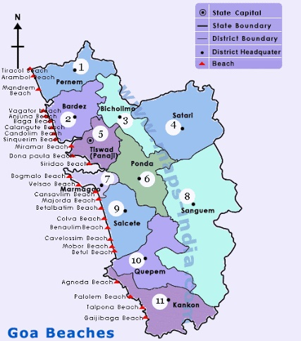

LET'S HAVE A LOOK AT THE TOUR MAP
WHERE TO VISIT , WHAT TO SEE?
SOME HOT PICKS(#HAVE_TO_VISIT)
- CALANGUTE BEACH - LARGEST BEACH IN NORTH GOA STRETCHING FROM CANDOLI TO BAGA
- BASILICA OF BOM JESUS - UNESCO WORLD HERITAGE SITE,BUILT IN 1594 IT HOUSES THE REMAINS OF ST.FRANCIS XAVIER
- FORT AGUADA - GUARD AGAINST THE DUTCH AND MARATHAS,IT WAS A REFERENCE POINT FOR THE VESSELS COMING FROM EUROPE
- BAGA BEACH - WITNESS EXCELLENT NIGHTLIFE
- CRUISE IN GOA - EXOTIC BEACHES,PRISTINE WATERS
- ANJUNA BEACH - ROCKY SHORES,ROCKING MUSIC AND A FREE HAPPY VIBE
- DUDHSAGAR FALLS - ONE OF THE HIGHEST WATERFALLS IN INDIA AND CASCADES THROUGH FOUR TIERS
- SCUBA DIVING
- CLUB CUBANA - SATURDAY NIGHT MARKETS,TOP QUALITY MUSIC AND STAFF
- CHURCH OF OUR LADY ON THE IMMACULATE CONCEPT - HEART OF THE CAPITAL CITY PANAJI
- DONA PAULA - HOME TO THE NATIONAL INSTITUTE OF OCEANOGRAPHY
- CHAPORA FORT - STRONG REMINDER OF GOA'S PORTUGEESE PAST
- BUTTERFLY BEACH - SEEMS LIKE A FAIRY PLACE,ONE OF THE MOST PHOTOGENIC PLACES IN WHOLE ARABIAN SEA COASTLINE
- ARAMBOL BEACH - BOHEMIAN VIBES
- VAGATOR BEACH - DRAMATIC RED CLIFFS
- PALOLEM BEACH - FLOCK OF FOREIGN TOURISTS
- COLVA BEACH - SHOPING AND PHENOMENAL
- MORJIM BEACH - LITTLE RUSSIA
- THALASSA - OVERLOOK THE ARABIAN SEA FROM ATOP ROCKY CLIFFS
- ANJUNA FLEA MARKET
- AGONDA BEACH - PLACE AWAY FROM THE HUSTLE BUSTLE OF THE CROWD WITH MORE SPACE AND SOLITUDE,CLEAR BLUE WATER AND COCONUT TREES
- CLUB LPK - TOP RATED DJs
- MAMBOS - CLUB AT CALANGUTE
- SE CATHEDRAL - ONE OF THE LARGEST CHURCHES IN WHOLE ASIA ,TOOK NEARLY 80 YEARS TO GET CONSTRUCTED
- CAVELOSSIM BEACH - BLACK ROCKS THAT CONTRAST WITH THE WHITE SAND
- CHURCH OF ST.CAJETAN - MAJOR RESEMBLANCE WITH ST. PETERS BASILICA IN ROME
OTHER_ATTRACTIONS
- PATNEM BEACH - COUNTRYSIDE PARTS
- QUERIM BEACH AND TIRACOL FORT - PICTURESQUE VIEW
- BETALBATIM BEACH
- BUTTERFLY CONSERVATORY OF GOA
- CHURCH OF ST. FRANCIS OF ASSISI - OLDEST CHURCH IN PANAJIM
- MONASTRY OF ST. AUGUSTINE
- SAVOI PLANTATION
- INDIAN AIRFORCE AVIATION MUSEUM